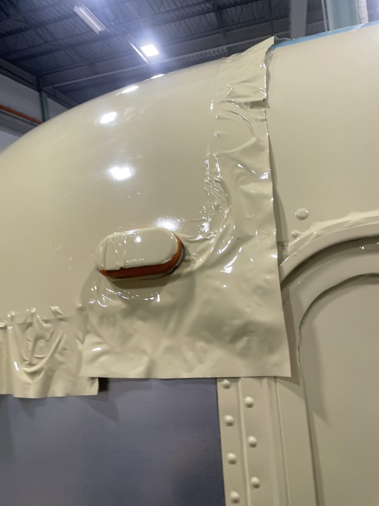

Cut the vinyl too short at the headlight
The film stops short of the headlight gap. Paint shows, or the edge lifts a day later. This is a classic mistake when you are new and working alone. Here is the honest fix.

The failure
- A line of paint showing between the film and the headlight.
- The edge at the headlight lifts or curls back.
- You tried to stretch the film to cover it. Now it pulled back even more.
Why it happens
- Trimmed before the film was fully seated. Film that isn't down in the recess yet looks longer than it is. Once it's seated, it's short.
- Film was stretched into the recess. Stretched film relaxes and pulls back from the edge.
- Knife followed the lamp, not the gap. No wrap-over or tuck left.
- Rushed trim. Headlights are often one of the last things on the panel. That's when it's easy to hurry, especially with nobody there to slow you down.
The fix
- Don't stretch it to reach. Stretching a short edge just moves the failure to next week.
- If it's not post-heated yet: lift the film back carefully, reposition within what the TDS allows, reseat it into the recess, and trim again with enough to tuck.
- If there's a small gap: make an inlay. Cut a strip of the same film, clean the area, lay it into the gap so it tucks, and put the seam where it hides best (body line or edge of the lamp). Overlap the way the film maker recommends.
- If the edge is short and overstretched: redo that section. It's faster than a comeback.
- Post-heat the edge per the film maker's TDS.
- Check it again before the vehicle leaves.
Stop it next time
- Seat first, trim last. Film goes all the way into the recess before the knife comes out.
- Leave extra for the tuck. You can always cut more. You can't add film back.
- Never cut on the lamp lens or on paint. Use knifeless tape where a blade shouldn't go.
- Practice trim around lamps on scrap before a customer vehicle. WRAP 911 is there on your phone when you need the next step.
Heat, stretch and post-heat: follow the film maker's TDS (technical data sheet) for the exact film on the job. 3M, Avery Dennison and BriteLine all publish one. This page does not give numbers on purpose.
Don't learn this alone
My trainer left, and I was alone on jobs I wasn't ready for. WRAP 911 is the help I never had.
Get WRAP 911 on the App Store Open the free trainerSee what's in it
Free to download on the App Store. You can also open a free preview of the trainer on the web.